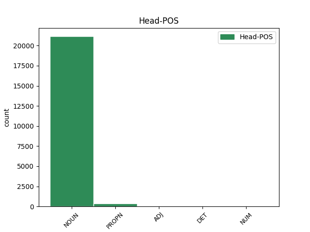

Distribution of features within this leaf

Agreement Rules sorted by frequency.
- When the dependent token is the modifer(mod) of the head token, and the head token is NOUN and the dependent token is ADJ.
1 W _ _ _ _ 0 _ _ _
2 przeciwieństwie _ _ _ _ 0 _ _ _
3 do _ _ _ _ 0 _ _ _
4 pozostałej pozostały ADJ adj:sg:gen:f:pos Case=Gen|Degree=Pos|Gender=Fem|Number=Sing 5 mod _ _
5 trójki trójka NOUN subst:sg:gen:f Case=Gen|Gender=Fem|Number=Sing 0 _ _ _
6 zachowywał _ _ _ _ 0 _ _ _
7 się _ _ _ _ 0 _ _ _
8 tak _ _ _ _ 0 _ _ _
9 , _ _ _ _ 0 _ _ _
10 jakby _ _ _ _ 0 _ _ _
11 przygoda _ _ _ _ 0 _ _ _
12 go _ _ _ _ 0 _ _ _
13 cieszyła _ _ _ _ 0 _ _ _
14 . _ _ _ _ 0 _ _ _
1 Strona _ _ _ _ 0 _ _ _
2 skarżąca _ _ _ _ 0 _ _ _
3 : _ _ _ _ 0 _ _ _
4 Regionalna regionalny ADJ adj:sg:nom:f:pos Case=Nom|Degree=Pos|Gender=Fem|Number=Sing 5 mod _ _
5 Mitnicheska Mitnicheska PROPN subst:sg:nom:f Case=Nom|Gender=Fem|Number=Sing 0 _ _ _
6 Direktsia _ _ _ _ 0 _ _ _
7 — _ _ _ _ 0 _ _ _
8 Plovdiv _ _ _ _ 0 _ _ _
1 Agencja _ _ _ _ 0 _ _ _
2 może _ _ _ _ 0 _ _ _
3 również _ _ _ _ 0 _ _ _
4 pomóc _ _ _ _ 0 _ _ _
5 użytkownikom _ _ _ _ 0 _ _ _
6 chemikaliów _ _ _ _ 0 _ _ _
7 w _ _ _ _ 0 _ _ _
8 znalezieniu _ _ _ _ 0 _ _ _
9 potencjalnych potencjalny ADJ adj:pl:gen:m1:pos Animacy=Hum|Case=Gen|Degree=Pos|Gender=Masc|Number=Plur 10 mod _ _
10 rejestrujących rejestrować ADJ pact:pl:gen:m1:imperf:aff Animacy=Hum|Aspect=Imp|Case=Gen|Gender=Masc|Number=Plur|Polarity=Pos|VerbForm=Part|Voice=Act 0 _ _ _
11 po _ _ _ _ 0 _ _ _
12 zakończeniu _ _ _ _ 0 _ _ _
13 okresu _ _ _ _ 0 _ _ _
14 wstępnej _ _ _ _ 0 _ _ _
15 rejestracji _ _ _ _ 0 _ _ _
16 . _ _ _ _ 0 _ _ _
1 Co _ _ _ _ 0 _ _ _
2 mnie _ _ _ _ 0 _ _ _
3 z _ _ _ _ 0 _ _ _
4 lekka _ _ _ _ 0 _ _ _
5 zawiodło _ _ _ _ 0 _ _ _
6 , _ _ _ _ 0 _ _ _
7 to _ _ _ _ 0 _ _ _
8 brak _ _ _ _ 0 _ _ _
9 wykonań _ _ _ _ 0 _ _ _
10 tych _ _ _ _ 0 _ _ _
11 piosenek _ _ _ _ 0 _ _ _
12 , _ _ _ _ 0 _ _ _
13 jak _ _ _ _ 0 _ _ _
14 : _ _ _ _ 0 _ _ _
15 „ _ _ _ _ 0 _ _ _
16 Everlasting _ _ _ _ 0 _ _ _
17 ” _ _ _ _ 0 _ _ _
18 , _ _ _ _ 0 _ _ _
19 „ _ _ _ _ 0 _ _ _
20 Ai _ _ _ _ 0 _ _ _
21 no _ _ _ _ 0 _ _ _
22 melody _ _ _ _ 0 _ _ _
23 ” _ _ _ _ 0 _ _ _
24 , _ _ _ _ 0 _ _ _
25 „ _ _ _ _ 0 _ _ _
26 The _ _ _ _ 0 _ _ _
27 power _ _ _ _ 0 _ _ _
28 of _ _ _ _ 0 _ _ _
29 smile _ _ _ _ 0 _ _ _
30 ” _ _ _ _ 0 _ _ _
31 , _ _ _ _ 0 _ _ _
32 „ _ _ _ _ 0 _ _ _
33 Amazing _ _ _ _ 0 _ _ _
34 Grace _ _ _ _ 0 _ _ _
35 ” _ _ _ _ 0 _ _ _
36 , _ _ _ _ 0 _ _ _
37 „ _ _ _ _ 0 _ _ _
38 Ave _ _ _ _ 0 _ _ _
39 Maria _ _ _ _ 0 _ _ _
40 ” _ _ _ _ 0 _ _ _
41 , _ _ _ _ 0 _ _ _
42 „ _ _ _ _ 0 _ _ _
43 Karma _ _ _ _ 0 _ _ _
44 ” _ _ _ _ 0 _ _ _
45 , _ _ _ _ 0 _ _ _
46 „ _ _ _ _ 0 _ _ _
47 Il _ _ _ _ 0 _ _ _
48 mare _ _ _ _ 0 _ _ _
49 di _ _ _ _ 0 _ _ _
50 suoni _ _ _ _ 0 _ _ _
51 ” _ _ _ _ 0 _ _ _
52 , _ _ _ _ 0 _ _ _
53 „ _ _ _ _ 0 _ _ _
54 Time _ _ _ _ 0 _ _ _
55 to _ _ _ _ 0 _ _ _
56 say _ _ _ _ 0 _ _ _
57 goodbye _ _ _ _ 0 _ _ _
58 ” _ _ _ _ 0 _ _ _
59 , _ _ _ _ 0 _ _ _
60 „ _ _ _ _ 0 _ _ _
61 Happy _ _ _ _ 0 _ _ _
62 birthday _ _ _ _ 0 _ _ _
63 to _ _ _ _ 0 _ _ _
64 me _ _ _ _ 0 _ _ _
65 ” _ _ _ _ 0 _ _ _
66 , _ _ _ _ 0 _ _ _
67 „ _ _ _ _ 0 _ _ _
68 Without _ _ _ _ 0 _ _ _
69 you _ _ _ _ 0 _ _ _
70 here _ _ _ _ 0 _ _ _
71 ” _ _ _ _ 0 _ _ _
72 ( _ _ _ _ 0 _ _ _
73 ten ten DET adj:sg:nom:m3:pos Animacy=Inan|Case=Nom|Gender=Masc|Number=Sing|PronType=Dem 0 _ _ _
74 ostatni ostatni ADJ adj:sg:nom:m3:pos Animacy=Inan|Case=Nom|Degree=Pos|Gender=Masc|Number=Sing 73 mod _ _
75 akurat _ _ _ _ 0 _ _ _
76 mógł _ _ _ _ 0 _ _ _
77 by _ _ _ _ 0 _ _ _
78 spokojnie _ _ _ _ 0 _ _ _
79 zostać _ _ _ _ 0 _ _ _
80 zagrany _ _ _ _ 0 _ _ _
81 na _ _ _ _ 0 _ _ _
82 gitarze _ _ _ _ 0 _ _ _
83 ) _ _ _ _ 0 _ _ _
84 i _ _ _ _ 0 _ _ _
85 mnóstwa _ _ _ _ 0 _ _ _
86 innych _ _ _ _ 0 _ _ _
87 . _ _ _ _ 0 _ _ _
1 Wygląda _ _ _ _ 0 _ _ _
2 na _ _ _ _ 0 _ _ _
3 12 _ _ _ _ 0 _ _ _
4 , _ _ _ _ 0 _ _ _
5 ale _ _ _ _ 0 _ _ _
6 ma _ _ _ _ 0 _ _ _
7 wybite wybić ADJ ppas:pl:acc:n:perf:aff Aspect=Perf|Case=Acc|Gender=Neut|Number=Plur|Polarity=Pos|VerbForm=Part|Voice=Pass 8 mod _ _
8 33 33 NUM num:pl:acc:n:congr Case=Acc|Gender=Neut|Number=Plur|NumForm=Digit|NumType=Card 0 _ _ _
9 . _ _ _ _ 0 _ _ _
Disagree Examples:
1 Kobieta _ _ _ _ 0 _ _ _
2 i _ _ _ _ 0 _ _ _
3 dwóch _ _ _ _ 0 _ _ _
4 mężczyzn mężczyzna NOUN subst:pl:gen:m1 Animacy=Hum|Case=Gen|Gender=Masc|Number=Plur 0 _ _ _
5 , _ _ _ _ 0 _ _ _
6 jeden jeden ADJ adj:sg:nom:m1:pos Animacy=Hum|Case=Nom|Degree=Pos|Gender=Masc|Number=Sing 4 mod _ _
7 w _ _ _ _ 0 _ _ _
8 ciemnych _ _ _ _ 0 _ _ _
9 okularach _ _ _ _ 0 _ _ _
10 , _ _ _ _ 0 _ _ _
11 pozują _ _ _ _ 0 _ _ _
12 do _ _ _ _ 0 _ _ _
13 zdjęcia _ _ _ _ 0 _ _ _
14 . _ _ _ _ 0 _ _ _
1 Dziesięć _ _ _ _ 0 _ _ _
2 osób osoba NOUN subst:pl:gen:f Case=Gen|Gender=Fem|Number=Plur 0 _ _ _
3 , _ _ _ _ 0 _ _ _
4 każda _ _ _ _ 0 _ _ _
5 ubrana ubrać ADJ ppas:sg:nom:f:perf:aff Aspect=Perf|Case=Nom|Gender=Fem|Number=Sing|Polarity=Pos|VerbForm=Part|Voice=Pass 2 mod _ _
6 w _ _ _ _ 0 _ _ _
7 innym _ _ _ _ 0 _ _ _
8 kolorze _ _ _ _ 0 _ _ _
9 , _ _ _ _ 0 _ _ _
10 jedzie _ _ _ _ 0 _ _ _
11 jedna _ _ _ _ 0 _ _ _
12 za _ _ _ _ 0 _ _ _
13 drugą _ _ _ _ 0 _ _ _
14 na _ _ _ _ 0 _ _ _
15 rowerach _ _ _ _ 0 _ _ _
16 . _ _ _ _ 0 _ _ _
1 Dwóch _ _ _ _ 0 _ _ _
2 mężczyzn mężczyzna NOUN subst:pl:gen:m1 Animacy=Hum|Case=Gen|Gender=Masc|Number=Plur 0 _ _ _
3 w _ _ _ _ 0 _ _ _
4 ciemnych _ _ _ _ 0 _ _ _
5 okularach _ _ _ _ 0 _ _ _
6 , _ _ _ _ 0 _ _ _
7 jeden jeden ADJ adj:sg:nom:m1:pos Animacy=Hum|Case=Nom|Degree=Pos|Gender=Masc|Number=Sing 2 mod _ _
8 w _ _ _ _ 0 _ _ _
9 białej _ _ _ _ 0 _ _ _
10 , _ _ _ _ 0 _ _ _
11 a _ _ _ _ 0 _ _ _
12 drugi _ _ _ _ 0 _ _ _
13 w _ _ _ _ 0 _ _ _
14 czarnej _ _ _ _ 0 _ _ _
15 koszulce _ _ _ _ 0 _ _ _
16 , _ _ _ _ 0 _ _ _
17 siedzi _ _ _ _ 0 _ _ _
18 przy _ _ _ _ 0 _ _ _
19 okrągłym _ _ _ _ 0 _ _ _
20 stoliku _ _ _ _ 0 _ _ _
21 z _ _ _ _ 0 _ _ _
22 butelkami _ _ _ _ 0 _ _ _
23 piwa _ _ _ _ 0 _ _ _
24 . _ _ _ _ 0 _ _ _
1 Chłopiec _ _ _ _ 0 _ _ _
2 w _ _ _ _ 0 _ _ _
3 kaloszach _ _ _ _ 0 _ _ _
4 stoi _ _ _ _ 0 _ _ _
5 przy _ _ _ _ 0 _ _ _
6 białej _ _ _ _ 0 _ _ _
7 barierce _ _ _ _ 0 _ _ _
8 z _ _ _ _ 0 _ _ _
9 wędką _ _ _ _ 0 _ _ _
10 w _ _ _ _ 0 _ _ _
11 lewej _ _ _ _ 0 _ _ _
12 ręce _ _ _ _ 0 _ _ _
13 , _ _ _ _ 0 _ _ _
14 prawą prawy ADJ adj:sg:inst:f:pos Case=Ins|Degree=Pos|Gender=Fem|Number=Sing 0 _ _ _
15 trzymając _ _ _ _ 0 _ _ _
16 wyciągniętą wyciągnąć ADJ ppas:sg:acc:f:perf:aff Aspect=Perf|Case=Acc|Gender=Fem|Number=Sing|Polarity=Pos|VerbForm=Part|Voice=Pass 14 mod _ _
17 przed _ _ _ _ 0 _ _ _
18 siebie _ _ _ _ 0 _ _ _
19 . _ _ _ _ 0 _ _ _
1 Dwoje _ _ _ _ 0 _ _ _
2 dzieci _ _ _ _ 0 _ _ _
3 w _ _ _ _ 0 _ _ _
4 czerwonych _ _ _ _ 0 _ _ _
5 koszulkach _ _ _ _ 0 _ _ _
6 bawi _ _ _ _ 0 _ _ _
7 się _ _ _ _ 0 _ _ _
8 w _ _ _ _ 0 _ _ _
9 stercie _ _ _ _ 0 _ _ _
10 liści _ _ _ _ 0 _ _ _
11 , _ _ _ _ 0 _ _ _
12 a _ _ _ _ 0 _ _ _
13 kolejne kolejny ADJ adj:pl:nom:n:pos Case=Nom|Degree=Pos|Gender=Neut|Number=Plur 15 mod _ _
14 dwoje _ _ _ _ 0 _ _ _
15 dzieci dziecko NOUN subst:pl:gen:n:col Case=Gen|Gender=Neut|Number=Plur|NumType=Sets 0 _ _ _
16 biegnie _ _ _ _ 0 _ _ _
17 w _ _ _ _ 0 _ _ _
18 ich _ _ _ _ 0 _ _ _
19 stronę _ _ _ _ 0 _ _ _
20 . _ _ _ _ 0 _ _ _